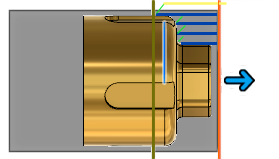

L'option Avant permet de limiter la trajectoire d'outil en confinant une zone. Cette limite est affichée en orange; utilisez ces paramètres pour sélectionner la zone de confinement avant.

Confinement avant de la trajectoire d'outil